Visi & Misi
Visi :
Menjadi sekolah dasar unggul yang mencetak generasi penerus bangsa yang cerdas, kreatif, berkarakter, dan siap menghadapi tantangan global
Misi :
1. Menyediakan kurikulum yang relevan dan pembelajaran yang interaktif untuk mengembangkan potensi akademik dan minat siswa
2. Membentuk karakter siswa yang berbudi pekerti luhur, disiplin, dan bertanggung jawab melalui pendidikan nilai-nilai moral dan kegiatan ekstrakurikuler
3. Mempersiapkan siswa untuk menjadi pemimpin masa depan dengan memberikan kesempatan untuk mengambil peran aktif dalam kegiatan sekolah dan masyarakat
4. Mendorong siswa untuk berinovasi dan berkreasi melalui program-program seni, sains, dan teknologi yang menarik dan menantang
5. Mengintegrasikan teknologi dalam proses pembelajaran untuk meningkatkan efektivitas dan efisiensi dalam pendidikan serta mempersiapkan siswa menghadapi era digital
6. Membangun kemitraan yang kuat dengan orang tua, komunitas, dan lembaga pendidikan lainnya untuk mendukung pengembangan pendidikan dan kesejahteraan siswa


 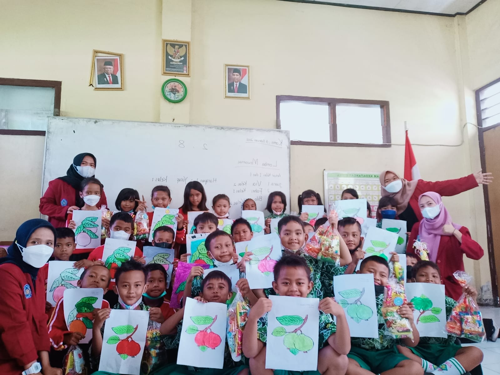
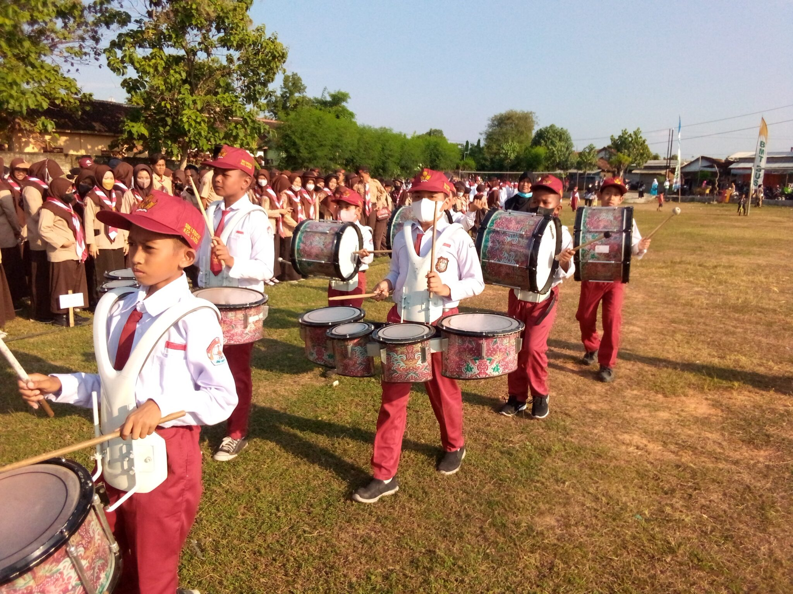
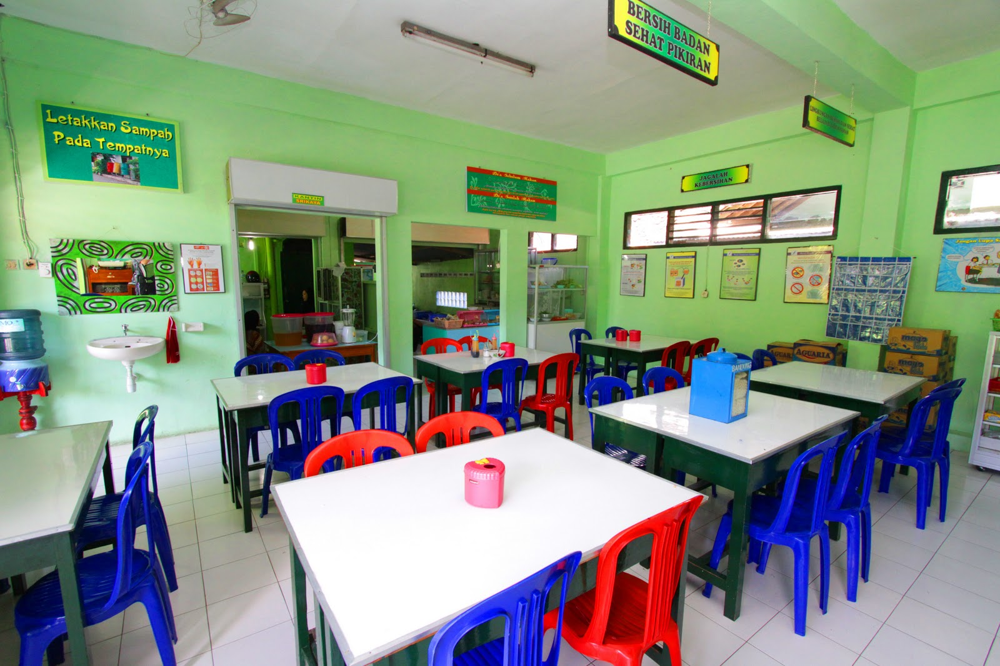
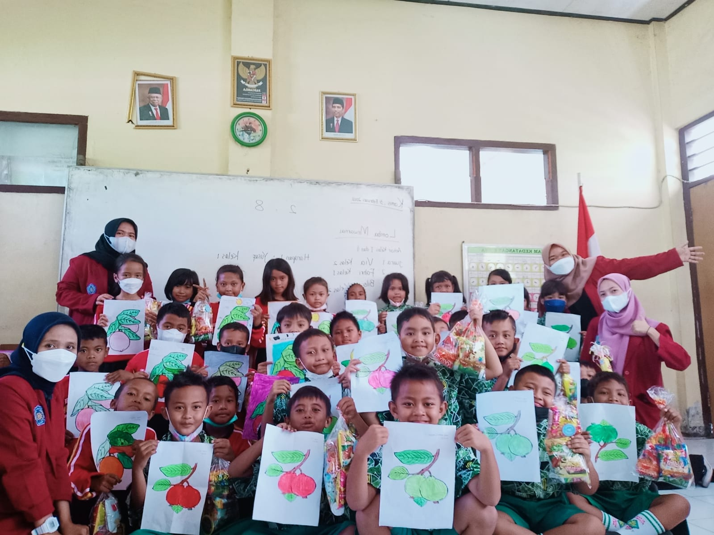
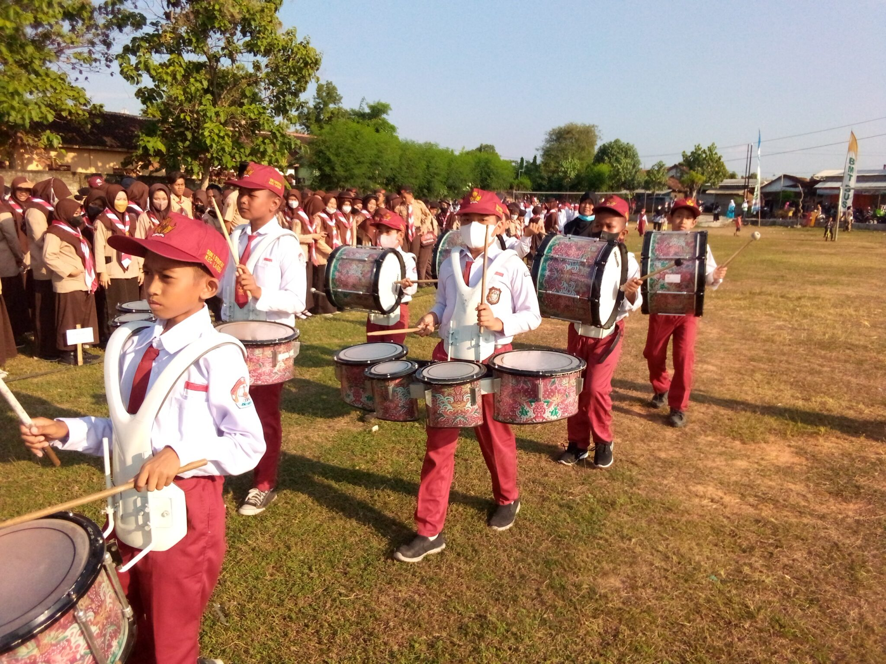
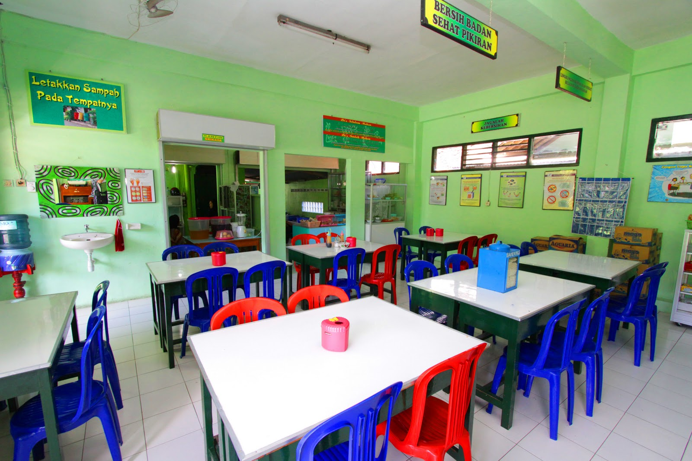
 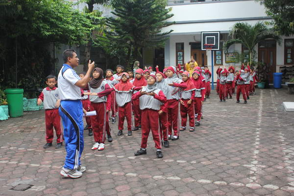
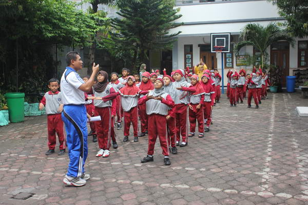
 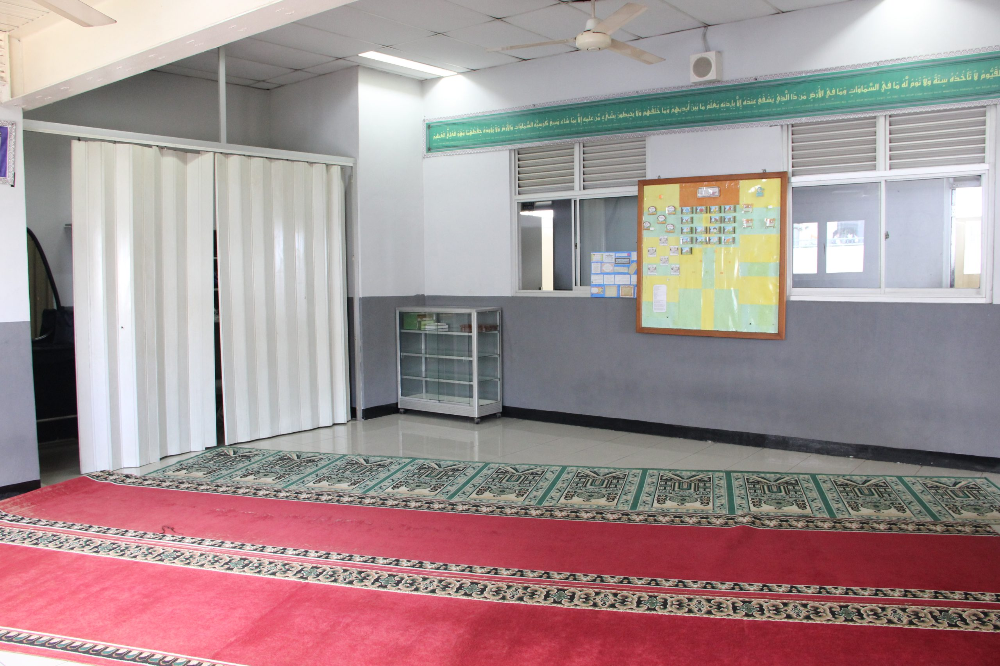
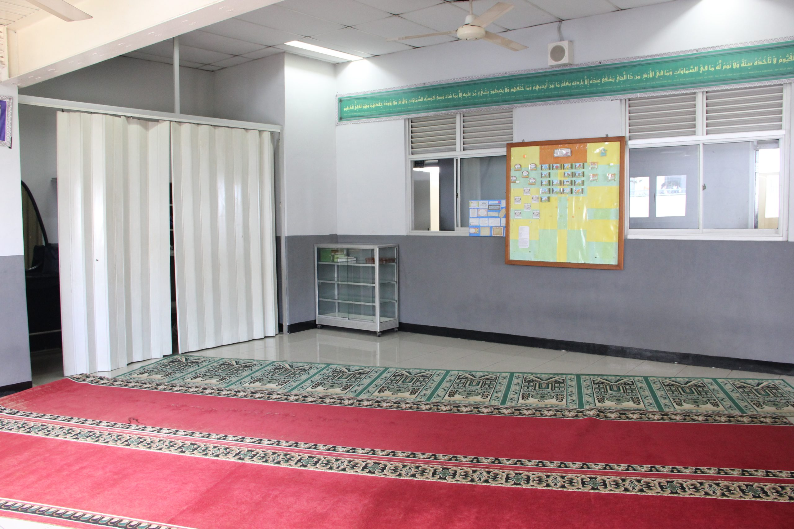


 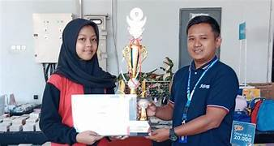
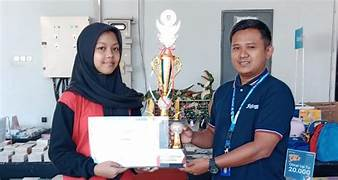
 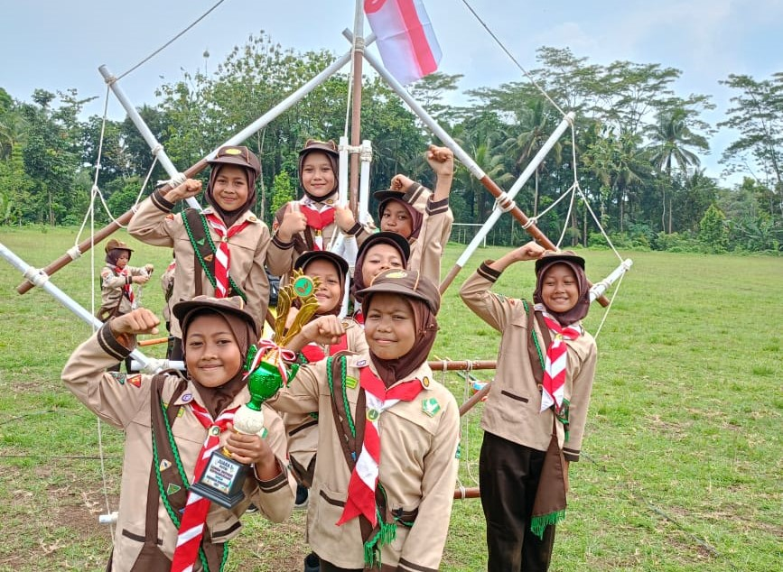
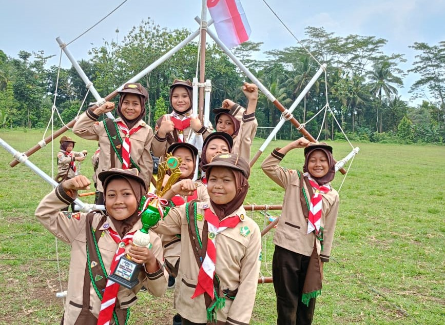


 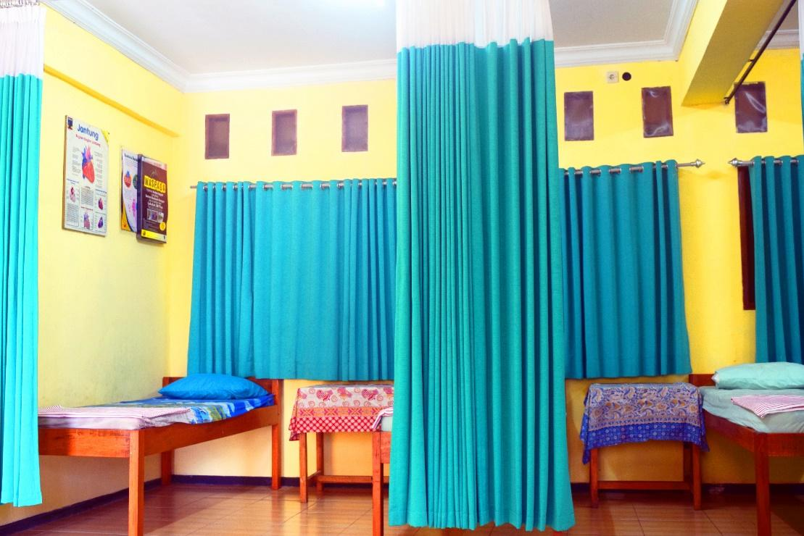
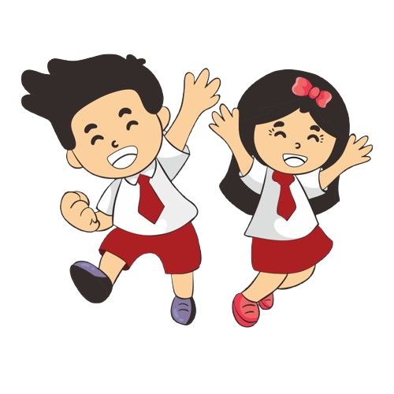
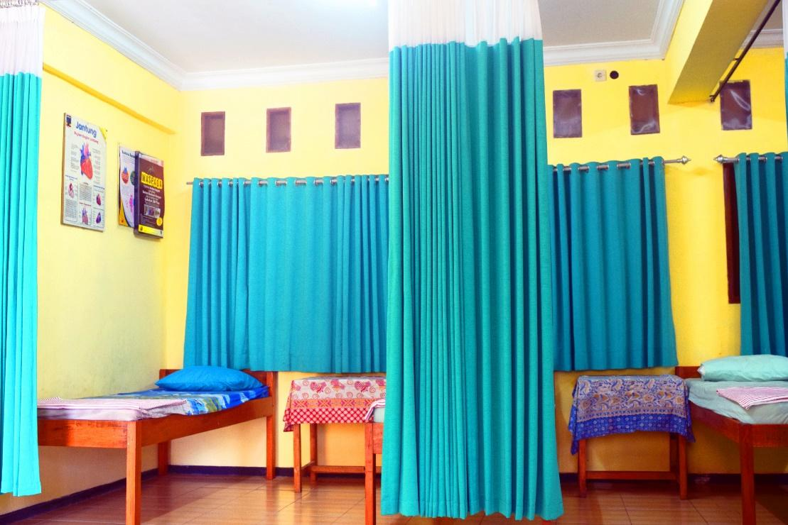
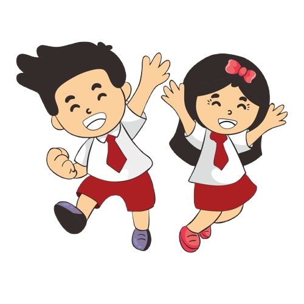